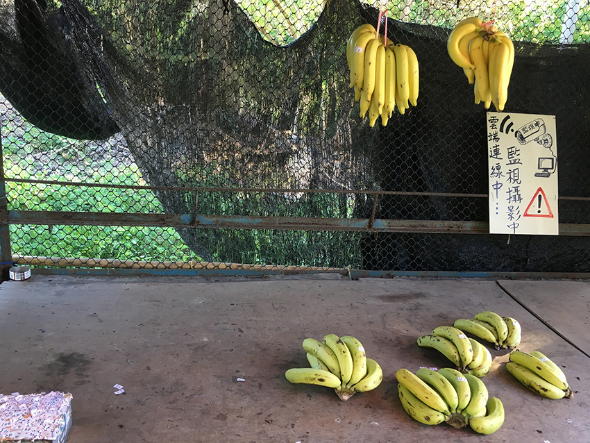
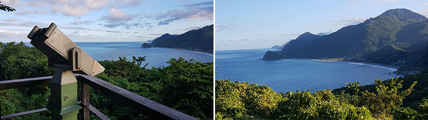
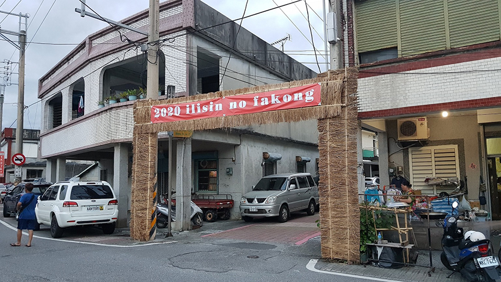
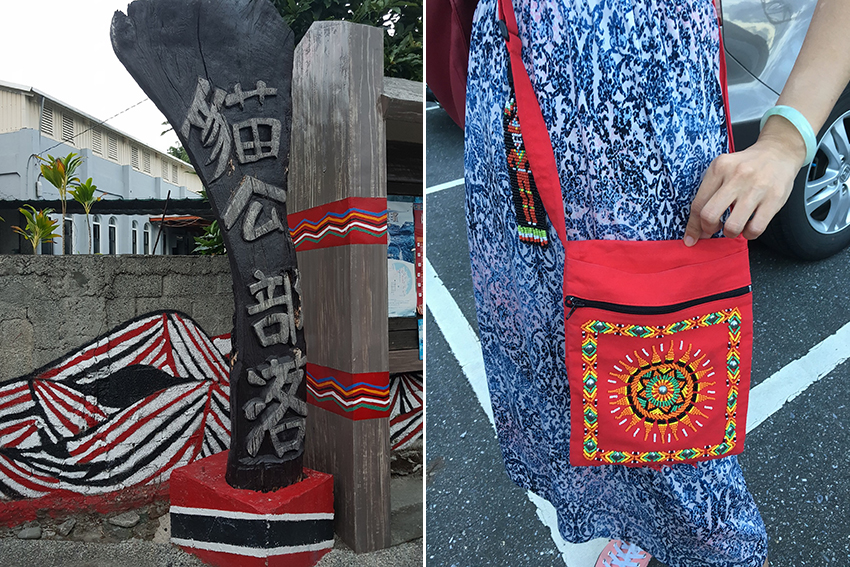
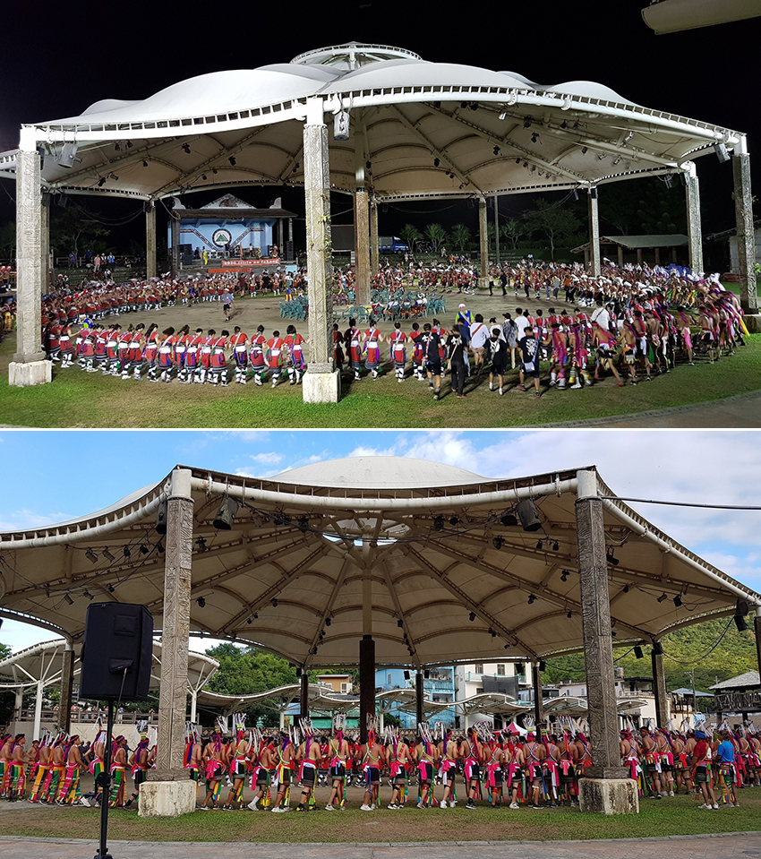

這次因在花蓮的好友相邀，讓我們可以親身感受到阿美族豐年祭帶給我們的感動，以往只能從新聞影片、書本文章中邊看邊想像的畫面，終於躍入眼中，著實令我們感動。
在友人的帶領我們前往這次的目的地花蓮豐濱的「貓公部落」途中，發現路旁有好幾攤無人香蕉攤，經朋友介紹這是他們的當地有趣的風景，叫做「良心香蕉攤」一切買賣自動化！自己動手挑選，價目都貼上香蕉上，決定後自己投錢進錢筒不找錢，根本無人便利商店的前身！因為我們是從南華開車到豐濱，路程有點遠，朋友為體諒有人可能需要休息，立馬安排了一個舒適的休憩點「芭崎瞭望站」，要找到人少的地方，又有乾淨的洗手間，更重要的是可以遠眺太平洋，真的讓人瞬間心境更開闊了，小憩片刻後，就要前往我們這次的旅遊重點「貓公部落」豐年祭。
|  | ||
| 良心香蕉攤 | ||
|  | ||
| 芭崎遼望台 |
貓公部落豐年祭為每年8/5~8/10間舉行，豐年祭主要是為緬懷祖先，慎終追遠、增進部落團結意志、祈福五穀豐收及解除厄運等等目的（查於花蓮縣文化局）。８／９會開放給外賓進入部落一同共襄盛舉，因為我們是「親友」的關係，很感恩的可以參與前一晚８／８的宴客，宴客日就好像是我們過農曆年時的圍爐，主人家直接在家門外擺起兩三桌的宴席與親朋好友們享受著豐盛的佳餚，談天說地，原本憂慮主人家是否會因為我們的加入而感到打擾，使我們一開始無法放得開，擔心會造成對方的不便，而後發現原來自己是多慮了，席間無論是家中的叔叔、阿姨、親友們都對我們很熱心，時時關心我們有沒有吃飽，酒夠不夠喝，待我們就好像認識多年般的親切，聊起天來沒有隔閡，時不時還會說幾句笑話，讓我們開懷不已，我真心愛上了叔叔阿姨們的幽默與熱情。豐年祭期間還可以看到男子右背「情人袋」，若女子有心儀的對象就可以放一顆檳榔進袋子，我們同行的男性友人也背了一個，可惜袋內尚無收穫。
|  | ||
| 豐年祭入口 | ||
|  | ||
| 貓公部落 | 情人袋 | |
豐年祭的前幾天是不開放外賓參與的，到了宴客日則可以於宴後邀請親友們下場與族人共舞同歡，但今年因為疫情影響，無法進入會場中同樂，但仍可在外圍觀禮，由主祭團領唱祭歌，族人圍成圓圈隨音律舞蹈，最內圈站著族裡的小朋友，中間為女性，最外圍則是青壯年男子，帶著感恩的心隨著音律歌聲以舞蹈展現熱情與活力，以及團隊的默契，發揮充滿力與美的表現，最外面則有長者適時的給予糾正示範，讓傳統得以傳承延續，雖然因為疫情的因素使我們無法進去同樂，只能在旁觀禮，觀禮時，聽著充滿故事的音律歌聲，讓我們也不禁握起彼此的手在場外模仿起會場內的舞步跳了起來，而原本在場中負責糾正族人舞步的長者，也熱心的指導我們舞步，並分享了茶（酒）水讓我們同享，一連串的體驗讓我深深感受到貓公部落豐年祭帶給我的活力熱情與對文化的尊重與傳承，手牽手，心向心，共享分食，這就是大家庭。因當天是父親節，所以活動提早結束，返程的途中，看到家家戶戶團聚和樂，家中的孩子跳著舞給長輩觀賞，談笑聲不斷，連我們都受到感染，嘴角上揚笑了起來。
| 豐年祭會場畫面 |
|  |
突然間有一股感慨，在科技飆速成長的時代，有很多人為了文化而努力，讓我看到了他們對傳統的尊重，為了不讓富有意義且美麗的傳統逐漸式微而堅持，因為文明發展與文化傳承缺一不可，如此才能使人的生活充滿豐富的體會，能為過去感動讚嘆，並為將來努力實現。